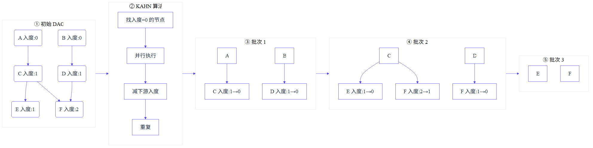

我是 程愚瀚
🎓 电子科技大学 · 软件工程 · 28届本科
技术栈
☕ Java 后端
🤖 AI Agent 开发
对基于 SDD 利用 AI 辅助编程比较熟练，简历上展示的项目 99% 都是 vibecoding 出来的， 能够熟练利用 coding 工具，写出高质量的代码。
熟练使用多种 Agent 工具，深入学习了它们的核心策略与实现原理，并应用到了自己的项目当中：
- OpenClaw — 学习了记忆的写入与读取机制，应用到 MyClaw 项目的长期记忆系统设计中
- Claude Code — 学习了压缩策略、checkpoint 机制、记忆策略，应用到 Workflow 框架的节点回滚与断点恢复中
- 豆包 — 学习了对话主题更新机制，应用到 MyClaw 项目的短期记忆滑动窗口策略中
- CodeBuddy — 学习了显示窗口使用量、可控的问题改写策略，应用到 RAG 项目的智能路由与问题改写中
对 Transformer（Top-p、KV Cache）、MCP、Function Calling、Skill、Harness、ReAct、PAE 等都有了解。
三个项目的设计理念
三个项目遵循最小化隔离化原则，每个功能独立拆分，职责清晰。
做项目越到后面，越感觉像是在菜市场挑菜——从别人的简历上挑一个还算新鲜的亮点，放到自己的简历上。尤其是现在这个 AI 时代，一句话就能让工具帮我落地任何一个技术点。但这些没有一条是我想出来的，也没有一条让我觉得非用它不可。
所以到最后，我在这份简历上压了又压、删了很多常规的优化方案，只留下了几条我觉得确实有自己的想法、做起来也挺有意思的实现：主要包括 Workflow 的架构设计、MyClaw 的模拟人生设计。
企业知识库 Agentic RAG
为了提升召回率，对整条流水线进行了全链路优化：上传阶段采用两级四层分片策略；检索阶段采用问题改写 + 双路召回（向量 + 关键词）；排序阶段采用 RNN 融合策略 + ReRank 重排。经过这些优化，Recall@5 从 68% 提升至 93%。
为了降低生成阶段的幻觉率，在生成环节进行了多项优化：Prompt 优化、结构化输出约束、低分拒答、幻觉检测机制，确保生成内容忠实于检索结果。
为了提升召回速度并降低 Embedding API 调用成本，通过智能路由对问题分类：简单问题（问候/数学等）通过关键词/正则匹配直接回答，跳过向量检索，提升召回速度并减少 API 调用。
针对复杂问题（如多跳推理查询），将其分解为子查询链，每步基于前序结论动态构建新查询。例如"程愚瀚和鲁迅的关系"→ 先查程愚瀚（电子科大学生）→ 再查电子科大的人才 → 关联到鲁迅。这一策略弥补了向量 RAG 相较于 GraphRAG 在全局性问题、多跳推理等需要逻辑链条的复杂问题上的短板。
可视化任务编排与执行系统
使用 Agent 时发现指令明确但 Agent 不执行（如要求检索后回答却跳过检索），因此思考如何将 Agent 行为确定化。核心思路是通过预定义 Agent 无法修改的 DAG 图，将任务执行流程固定化，保证可见即所得。
摒弃 Master 集中调度。Plan Agent 只负责根据用户任务逻辑，输出一份完整、结构化的 DAG 数据（节点列表 + 边关系 JSON），不再参与后续调度；执行引擎 读取这份独立 DAG 数据，自主完成全流程调度、节点分发、并行运算。总结一下就是把"人去定义执行计划"的过程交给了 Plan 节点。
将 Agent 执行任务的流程固定化，DAG 图可视化后可以清楚判断任务执行逻辑是否是我们想要的，保证可见即所得，不会出现"明面一套背地一套"的情况。
相比 PAE 框架可根据前一步结果动态改变下一步计划，本方案是固定化的。但针对节点执行失败的情况，支持三种异常处理机制确保流程完整执行。
拥有全局任务执行逻辑后可以做出更大程度的优化。并行执行逻辑基于 KAHN 算法：入度为 0 的节点可以直接执行，每执行一个节点就将其指向的节点的入度减一，于是就会有新的可执行节点出现。将节点分为一批一批执行，实现更大程度的并行。

实现与存储结构有关。我的存储结构是每一个节点的输入输出单独存储，而 Claude Code 和 LangGraph 的存储都是全局 state，所有输出记录在里面，回滚通过 checkpoint 机制在 state 线上打标记点，回滚时截断 checkpoint 之后的内容即可。对比：我的实现能够支持节点级有选择地进行回滚重试，可单独清空指定节点输出数据从该节点重新执行；checkpoint 机制的实现更简单但灵活性较低。
节点分开存储的方式天生就支持流程的可视化，也就更能支持对流程的观测、测评以及优化。
Plan Agent 输出 DAG 后，执行引擎将每个节点分发给专门的 Sub Agent 执行。Sub Agent 只关注自身节点的任务，无需感知全局流程。不同任务可以交给不同角色的 Sub Agent 处理（如调研、代码审查、安全检查等），实现上下文隔离与任务拆分。
基于模板方法统一实现超时控制、重试机制以及三级异常处理机制，确保 DAG 流程能够顺利执行完毕。
MyClaw
- 前面已经做了 Workflow 和 RAG，缺一个跟记忆相关的项目，对记忆方向比较感兴趣
- 使用 OpenClaw 发现其记忆写入确定性差（从未主动写入），长期记忆实现过于简朴，想实现一个更好的记忆系统
- 希望设计一个更像真人朋友的对话系统，让对话更真实、更有依据
通过 RecallBench 利用 LongMemEval 测评集，从 Information Extraction、Multi-Session Reasoning、Knowledge Updates、Temporal Reasoning 四个维度，对比纯模型大窗口 / RAG 检索 / Hindsight 三种方案，评估各方案在长程记忆场景下的实际表现。
| 维度 | 纯模型大窗口 | RAG 检索 | Hindsight |
|---|---|---|---|
| Information Extraction 精确检索 |
60% | 65% | 95% |
| Multi-Session Reasoning 跨会话推理 |
45% | 50% | 90% |
| Knowledge Updates 知识更新 |
50% | 45% | 88% |
| Temporal Reasoning 时序推理 |
55% | 50% | 90% |
- 通过四路召回（向量、关键词、图、时间）策略，提高精确检索能力。
- 通过四种记忆分类（世界、经验、观点、观察）策略，实现事实和经验的区分。
- 通过 Opinion 网络的置信度演化机制，新证据强化或削弱已有观点的置信度，实现"用户先喜欢 A 后改口 B"这类矛盾信息的动态追踪与自动更新。
- 通过为每条记忆携带时间元数据（发生时间 + 记录时间），recall 时结合时间范围过滤与时间衰减排序，实现"用户上个月说了什么"这类时序精确查询。
- 自动触发：自研 Foresight 规则引擎，借鉴 EverMemOS 前瞻记忆设计思路，基于 LLM 从对话中自动提取条件-行动规则，结合 Spring @Scheduled 实现 Heartbeat 定时扫描机制，支持对话中即时匹配与定时批量执行双触发模式，完成从被动响应到主动服务的范式升级。
- 人物活动轨迹模拟：设计五级生活线体系（Life Plan → Year Plan → Month Plan → Week Plan → Day Plan），Worker Agent 每日定时自动推进角色生活状态，让 AI 拥有连贯的"内在生活"——即使不聊天，角色也在真实地活着，对话时自然分享今日见闻。
- 时间感知与空间锚定：构建角色的时间认知模型，对话中自然体现时间流逝感（"刚在开车"、"等了我二十分钟"、"昨晚看了一部电影"），结合空间位置锚定，让角色行为在时空维度上自洽，避免"上一秒在做饭，下一秒说在开会"的割裂感。
- 小说人物迁移：从小说文本自动提取人物档案（性格、经历、社交关系、日常活动），将小说中的时间线映射到真实世界时间轴，实现"小说人物活在现实中"的沉浸式对话体验。
- 主动对话与话题转换：基于 Heartbeat 心跳检测机制，支持空闲触发、定时触发、被动失效三种策略主动开启话题；结合生活线状态与对话上下文，在话题自然衰减时平滑过渡到新话题，避免生硬的"对了，我还有个事要说"，模拟真人聊天的联想式话题跳跃。
- 权限控制与人工审批：采用策略防护 + 人工审批（HITL）双层保障机制，Agent 自动执行命令前先经风险策略拦截，高危操作触发人工审批流程，兼顾执行效率与系统安全。
- 双 Agent 协作架构：设计 Worker + Chatter 双 Agent 协作模式，Worker 后台独立推进剧情与生活线，Chatter 负责与用户对话交互，实现记忆、职责、权限三分离。
- SSE 流式输出：基于 WorkflowMsgCallback 消息总线搭建异步消费线程，实时消费队列事件并通过 SseEmitter 推送到前端，实现 LLM 流式打字机效果与任务执行进度实时展示。
- 微信绑定：集成微信渠道接入，支持通过微信与 AI 对话，打通 IM 与 CLI 双端交互，用户可在微信端接收主动推送消息与定时提醒，扩展 AI 的可触达场景。
联系方式
感谢您的时间，期待进一步交流！